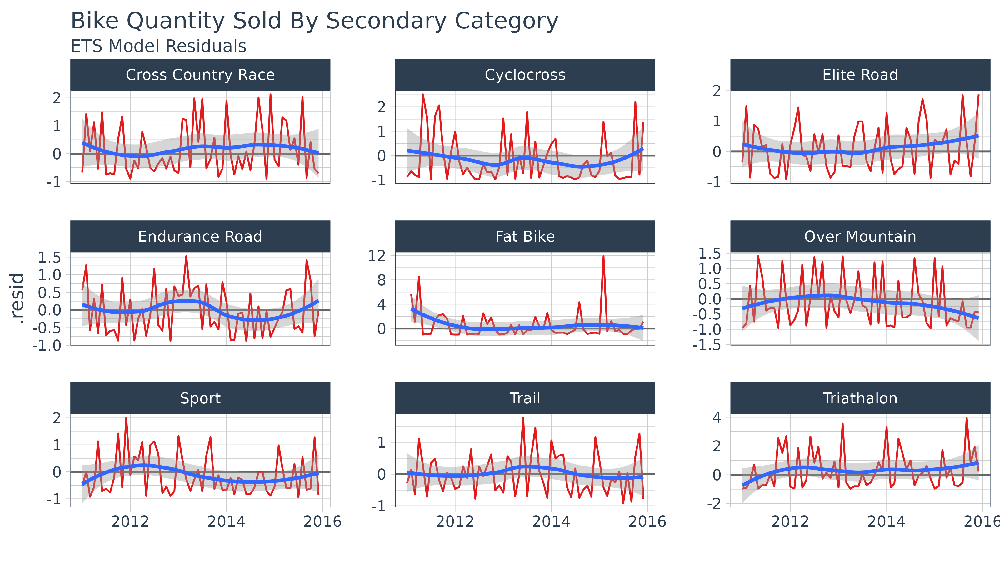

Forecasting Time Series Groups in the tidyverse
Matt Dancho
2025-08-28
Source:vignettes/SW01_Forecasting_Time_Series_Groups.Rmd
SW01_Forecasting_Time_Series_Groups.RmdExtending
broomto time series forecasting
One of the most powerful benefits of sweep is that it
helps forecasting at scale within the “tidyverse”. There are two common
situations:
- Applying a model to groups of time series
- Applying multiple models to a time series
In this vignette we’ll review how sweep can help the
first situation: Applying a model to groups of time
series.
Bike Sales
We’ll use the bike sales data set, bike_sales, provided
with the sweep package for this tutorial. The
bike_sales data set is a fictional daily order
history that spans 2011 through 2015. It simulates a sales database that
is typical of a business. The customers are the “bike shops” and the
products are the “models”.
bike_sales## # A tibble: 15,644 × 17
## order.date order.id order.line quantity price price.ext customer.id
## <date> <dbl> <int> <dbl> <dbl> <dbl> <dbl>
## 1 2011-01-07 1 1 1 6070 6070 2
## 2 2011-01-07 1 2 1 5970 5970 2
## 3 2011-01-10 2 1 1 2770 2770 10
## 4 2011-01-10 2 2 1 5970 5970 10
## 5 2011-01-10 3 1 1 10660 10660 6
## 6 2011-01-10 3 2 1 3200 3200 6
## 7 2011-01-10 3 3 1 12790 12790 6
## 8 2011-01-10 3 4 1 5330 5330 6
## 9 2011-01-10 3 5 1 1570 1570 6
## 10 2011-01-11 4 1 1 4800 4800 22
## # ℹ 15,634 more rows
## # ℹ 10 more variables: bikeshop.name <chr>, bikeshop.city <chr>,
## # bikeshop.state <chr>, latitude <dbl>, longitude <dbl>, product.id <dbl>,
## # model <chr>, category.primary <chr>, category.secondary <chr>, frame <chr>We’ll analyse the monthly sales trends for the bicycle manufacturer. Let’s transform the data set by aggregating by month.
bike_sales_monthly <- bike_sales %>%
mutate(month = month(order.date, label = TRUE),
year = year(order.date)) %>%
group_by(year, month) %>%
summarise(total.qty = sum(quantity)) ## `summarise()` has grouped output by 'year'. You can override using the
## `.groups` argument.
bike_sales_monthly## # A tibble: 60 × 3
## # Groups: year [5]
## year month total.qty
## <dbl> <ord> <dbl>
## 1 2011 Jan 440
## 2 2011 Feb 2017
## 3 2011 Mar 1584
## 4 2011 Apr 4478
## 5 2011 May 4112
## 6 2011 Jun 4251
## 7 2011 Jul 1550
## 8 2011 Aug 1470
## 9 2011 Sep 975
## 10 2011 Oct 697
## # ℹ 50 more rowsWe can visualize package with a month plot using the
ggplot2 .
bike_sales_monthly %>%
ggplot(aes(x = month, y = total.qty, group = year)) +
geom_area(aes(fill = year), position = "stack") +
labs(title = "Quantity Sold: Month Plot", x = "", y = "Sales",
subtitle = "March through July tend to be most active") +
scale_y_continuous() +
theme_tq()Suppose Manufacturing wants a more granular forecast because the bike
components are related to the secondary category. In the next section we
discuss how sweep can help to perform a forecast on each
sub-category.
Performing Forecasts on Groups
First, we need to get the data organized into groups by month of the
year. We’ll create a new “order.month” date using
zoo::as.yearmon() that captures the year and month
information from the “order.date” and then passing this to
lubridate::as_date() to convert to date format.
monthly_qty_by_cat2 <- bike_sales %>%
mutate(order.month = as_date(as.yearmon(order.date))) %>%
group_by(category.secondary, order.month) %>%
summarise(total.qty = sum(quantity))## `summarise()` has grouped output by 'category.secondary'. You can override
## using the `.groups` argument.
monthly_qty_by_cat2## # A tibble: 538 × 3
## # Groups: category.secondary [9]
## category.secondary order.month total.qty
## <chr> <date> <dbl>
## 1 Cross Country Race 2011-01-01 122
## 2 Cross Country Race 2011-02-01 489
## 3 Cross Country Race 2011-03-01 505
## 4 Cross Country Race 2011-04-01 343
## 5 Cross Country Race 2011-05-01 263
## 6 Cross Country Race 2011-06-01 735
## 7 Cross Country Race 2011-07-01 183
## 8 Cross Country Race 2011-08-01 66
## 9 Cross Country Race 2011-09-01 97
## 10 Cross Country Race 2011-10-01 189
## # ℹ 528 more rowsNext, we use the nest() function from the
tidyr package to consolidate each time series by group. The
newly created list-column, “data.tbl”, contains the “order.month” and
“total.qty” columns by group from the previous step. The
nest() function just bundles the data together which is
very useful for iterative functional programming.
monthly_qty_by_cat2_nest <- monthly_qty_by_cat2 %>%
group_by(category.secondary) %>%
nest()
monthly_qty_by_cat2_nest## # A tibble: 9 × 2
## # Groups: category.secondary [9]
## category.secondary data
## <chr> <list>
## 1 Cross Country Race <tibble [60 × 2]>
## 2 Cyclocross <tibble [60 × 2]>
## 3 Elite Road <tibble [60 × 2]>
## 4 Endurance Road <tibble [60 × 2]>
## 5 Fat Bike <tibble [58 × 2]>
## 6 Over Mountain <tibble [60 × 2]>
## 7 Sport <tibble [60 × 2]>
## 8 Trail <tibble [60 × 2]>
## 9 Triathalon <tibble [60 × 2]>Forecasting Workflow
The forecasting workflow involves a few basic steps:
- Step 1: Coerce to a
tsobject class. - Step 2: Apply a model (or set of models)
- Step 3: Forecast the models (similar to predict)
- Step 4: Tidy the forecast
Step 1: Coerce to a ts object class
In this step we map the tk_ts() function into a new
column “data.ts”. The procedure is performed using the combination of
dplyr::mutate() and purrr::map(), which works
really well for the data science workflow where analyses are built
progressively. As a result, this combination will be used in many of the
subsequent steps in this vignette as we build the analysis.
mutate and map
The mutate() function adds a column, and the
map() function maps the contents of a list-column
(.x) to a function (.f). In our case,
.x = data.tbl and .f = tk_ts. The arguments
select = -order.month, start = 2011, and
freq = 12 are passed to the ... parameters in
map, which are passed through to the function. The select
statement is used to drop the “order.month” from the final output so we
don’t get a bunch of warning messages. We specify
start = 2011 and freq = 12 to return a monthly
frequency.
monthly_qty_by_cat2_ts <- monthly_qty_by_cat2_nest %>%
mutate(data.ts = map(.x = data,
.f = tk_ts,
select = -order.month,
start = 2011,
freq = 12))
monthly_qty_by_cat2_ts## # A tibble: 9 × 3
## # Groups: category.secondary [9]
## category.secondary data data.ts
## <chr> <list> <list>
## 1 Cross Country Race <tibble [60 × 2]> <ts [60 × 1]>
## 2 Cyclocross <tibble [60 × 2]> <ts [60 × 1]>
## 3 Elite Road <tibble [60 × 2]> <ts [60 × 1]>
## 4 Endurance Road <tibble [60 × 2]> <ts [60 × 1]>
## 5 Fat Bike <tibble [58 × 2]> <ts [58 × 1]>
## 6 Over Mountain <tibble [60 × 2]> <ts [60 × 1]>
## 7 Sport <tibble [60 × 2]> <ts [60 × 1]>
## 8 Trail <tibble [60 × 2]> <ts [60 × 1]>
## 9 Triathalon <tibble [60 × 2]> <ts [60 × 1]>Step 2: Modeling a time series
Next, we map the Exponential Smoothing ETS (Error, Trend, Seasonal)
model function, ets, from the forecast
package. Use the combination of mutate to add a column and
map to interatively apply a function rowwise to a
list-column. In this instance, the function to map the ets
function and the list-column is “data.ts”. We rename the resultant
column “fit.ets” indicating an ETS model was fit to the time series
data.
monthly_qty_by_cat2_fit <- monthly_qty_by_cat2_ts %>%
mutate(fit.ets = map(data.ts, ets))
monthly_qty_by_cat2_fit## # A tibble: 9 × 4
## # Groups: category.secondary [9]
## category.secondary data data.ts fit.ets
## <chr> <list> <list> <list>
## 1 Cross Country Race <tibble [60 × 2]> <ts [60 × 1]> <ets>
## 2 Cyclocross <tibble [60 × 2]> <ts [60 × 1]> <ets>
## 3 Elite Road <tibble [60 × 2]> <ts [60 × 1]> <ets>
## 4 Endurance Road <tibble [60 × 2]> <ts [60 × 1]> <ets>
## 5 Fat Bike <tibble [58 × 2]> <ts [58 × 1]> <ets>
## 6 Over Mountain <tibble [60 × 2]> <ts [60 × 1]> <ets>
## 7 Sport <tibble [60 × 2]> <ts [60 × 1]> <ets>
## 8 Trail <tibble [60 × 2]> <ts [60 × 1]> <ets>
## 9 Triathalon <tibble [60 × 2]> <ts [60 × 1]> <ets>At this point, we can do some model inspection with the
sweep tidiers.
sw_tidy
To get the model parameters for each nested list, we can combine
sw_tidy within the mutate and map
combo. The only real difference is now we unnest the
generated column (named “tidy”). Last, because it’s easier to compare
the model parameters side by side, we add one additional call to
spread() from the tidyr package.
monthly_qty_by_cat2_fit %>%
mutate(tidy = map(fit.ets, sw_tidy)) %>%
unnest(tidy) %>%
spread(key = category.secondary, value = estimate)## # A tibble: 128 × 13
## data data.ts fit.ets term `Cross Country Race` Cyclocross `Elite Road`
## <list> <list> <list> <chr> <dbl> <dbl> <dbl>
## 1 <tibble> <ts[…]> <ets> alpha 0.0398 NA NA
## 2 <tibble> <ts[…]> <ets> gamma 0.000101 NA NA
## 3 <tibble> <ts[…]> <ets> l 321. NA NA
## 4 <tibble> <ts[…]> <ets> s0 0.503 NA NA
## 5 <tibble> <ts[…]> <ets> s1 1.10 NA NA
## 6 <tibble> <ts[…]> <ets> s10 0.643 NA NA
## 7 <tibble> <ts[…]> <ets> s2 0.375 NA NA
## 8 <tibble> <ts[…]> <ets> s3 1.12 NA NA
## 9 <tibble> <ts[…]> <ets> s4 0.630 NA NA
## 10 <tibble> <ts[…]> <ets> s5 2.06 NA NA
## # ℹ 118 more rows
## # ℹ 6 more variables: `Endurance Road` <dbl>, `Fat Bike` <dbl>,
## # `Over Mountain` <dbl>, Sport <dbl>, Trail <dbl>, Triathalon <dbl>sw_glance
We can view the model accuracies also by mapping
sw_glance within the mutate and
map combo.
## # A tibble: 9 × 16
## # Groups: category.secondary [9]
## category.secondary data data.ts fit.ets model.desc sigma logLik AIC
## <chr> <list> <list> <list> <chr> <dbl> <dbl> <dbl>
## 1 Cross Country Race <tibble> <ts[…]> <ets> ETS(M,N,M) 1.06 -464. 957.
## 2 Cyclocross <tibble> <ts[…]> <ets> ETS(M,N,M) 1.12 -409. 848.
## 3 Elite Road <tibble> <ts[…]> <ets> ETS(M,N,M) 0.895 -471. 972.
## 4 Endurance Road <tibble> <ts[…]> <ets> ETS(M,N,M) 0.759 -439. 909.
## 5 Fat Bike <tibble> <ts[…]> <ets> ETS(M,N,M) 2.73 -343. 715.
## 6 Over Mountain <tibble> <ts[…]> <ets> ETS(M,N,M) 0.910 -423. 877.
## 7 Sport <tibble> <ts[…]> <ets> ETS(M,N,M) 0.872 -427. 884.
## 8 Trail <tibble> <ts[…]> <ets> ETS(M,A,M) 0.741 -411. 855.
## 9 Triathalon <tibble> <ts[…]> <ets> ETS(M,N,M) 1.52 -410. 850.
## # ℹ 8 more variables: BIC <dbl>, ME <dbl>, RMSE <dbl>, MAE <dbl>, MPE <dbl>,
## # MAPE <dbl>, MASE <dbl>, ACF1 <dbl>sw_augment
The augmented fitted and residual values can be achieved in much the
same manner. This returns nine groups data. Note that we pass
timetk_idx = TRUE to return the date format times as
opposed to the regular (yearmon or numeric) time series.
augment_fit_ets <- monthly_qty_by_cat2_fit %>%
mutate(augment = map(fit.ets, sw_augment, timetk_idx = TRUE, rename_index = "date")) %>%
unnest(augment)## Warning: There were 9 warnings in `mutate()`.
## The first warning was:
## ℹ In argument: `augment = map(fit.ets, sw_augment, timetk_idx = TRUE,
## rename_index = "date")`.
## ℹ In group 1: `category.secondary = "Cross Country Race"`.
## Caused by warning in `.check_tzones()`:
## ! 'tzone' attributes are inconsistent
## ℹ Run `dplyr::last_dplyr_warnings()` to see the 8 remaining warnings.
augment_fit_ets## # A tibble: 538 × 8
## # Groups: category.secondary [9]
## category.secondary data data.ts fit.ets date .actual .fitted
## <chr> <list> <list> <list> <date> <dbl> <dbl>
## 1 Cross Country Race <tibble> <ts [60 × 1]> <ets> 2011-01-01 122 373.
## 2 Cross Country Race <tibble> <ts [60 × 1]> <ets> 2011-02-01 489 201.
## 3 Cross Country Race <tibble> <ts [60 × 1]> <ets> 2011-03-01 505 465.
## 4 Cross Country Race <tibble> <ts [60 × 1]> <ets> 2011-04-01 343 161.
## 5 Cross Country Race <tibble> <ts [60 × 1]> <ets> 2011-05-01 263 567.
## 6 Cross Country Race <tibble> <ts [60 × 1]> <ets> 2011-06-01 735 296.
## 7 Cross Country Race <tibble> <ts [60 × 1]> <ets> 2011-07-01 183 741.
## 8 Cross Country Race <tibble> <ts [60 × 1]> <ets> 2011-08-01 66 220.
## 9 Cross Country Race <tibble> <ts [60 × 1]> <ets> 2011-09-01 97 381.
## 10 Cross Country Race <tibble> <ts [60 × 1]> <ets> 2011-10-01 189 123.
## # ℹ 528 more rows
## # ℹ 1 more variable: .resid <dbl>We can plot the residuals for the nine categories like so. Unfortunately we do see some very high residuals (especially with “Fat Bike”). This is often the case with realworld data.
augment_fit_ets %>%
ggplot(aes(x = date, y = .resid, group = category.secondary)) +
geom_hline(yintercept = 0, color = "grey40") +
geom_line(color = palette_light()[[2]]) +
geom_smooth(method = "loess") +
labs(title = "Bike Quantity Sold By Secondary Category",
subtitle = "ETS Model Residuals", x = "") +
theme_tq() +
facet_wrap(~ category.secondary, scale = "free_y", ncol = 3) +
scale_x_date(date_labels = "%Y")## `geom_smooth()` using formula = 'y ~ x'
sw_tidy_decomp
We can create decompositions using the same procedure with
sw_tidy_decomp() and the mutate and
map combo.
monthly_qty_by_cat2_fit %>%
mutate(decomp = map(fit.ets, sw_tidy_decomp, timetk_idx = TRUE, rename_index = "date")) %>%
unnest(decomp)## Warning: There were 9 warnings in `mutate()`.
## The first warning was:
## ℹ In argument: `decomp = map(fit.ets, sw_tidy_decomp, timetk_idx = TRUE,
## rename_index = "date")`.
## ℹ In group 1: `category.secondary = "Cross Country Race"`.
## Caused by warning in `.check_tzones()`:
## ! 'tzone' attributes are inconsistent
## ℹ Run `dplyr::last_dplyr_warnings()` to see the 8 remaining warnings.## # A tibble: 538 × 9
## # Groups: category.secondary [9]
## category.secondary data data.ts fit.ets date observed level season
## <chr> <list> <list> <list> <date> <dbl> <dbl> <dbl>
## 1 Cross Country Race <tibble> <ts[…]> <ets> 2011-01-01 122 313. 1.16
## 2 Cross Country Race <tibble> <ts[…]> <ets> 2011-02-01 489 331. 0.643
## 3 Cross Country Race <tibble> <ts[…]> <ets> 2011-03-01 505 332. 1.41
## 4 Cross Country Race <tibble> <ts[…]> <ets> 2011-04-01 343 347. 0.487
## 5 Cross Country Race <tibble> <ts[…]> <ets> 2011-05-01 263 339. 1.64
## 6 Cross Country Race <tibble> <ts[…]> <ets> 2011-06-01 735 359. 0.873
## 7 Cross Country Race <tibble> <ts[…]> <ets> 2011-07-01 183 348. 2.06
## 8 Cross Country Race <tibble> <ts[…]> <ets> 2011-08-01 66 339. 0.630
## 9 Cross Country Race <tibble> <ts[…]> <ets> 2011-09-01 97 329. 1.12
## 10 Cross Country Race <tibble> <ts[…]> <ets> 2011-10-01 189 336. 0.375
## # ℹ 528 more rows
## # ℹ 1 more variable: slope <dbl>Step 3: Forecasting the model
We can also forecast the multiple models again using a very similar
approach with the forecast function. We want a 12 month
forecast so we add the argument for the h = 12 (refer to
?forecast for all of the parameters you can add, there’s
quite a few).
monthly_qty_by_cat2_fcast <- monthly_qty_by_cat2_fit %>%
mutate(fcast.ets = map(fit.ets, forecast, h = 12))
monthly_qty_by_cat2_fcast## # A tibble: 9 × 5
## # Groups: category.secondary [9]
## category.secondary data data.ts fit.ets fcast.ets
## <chr> <list> <list> <list> <list>
## 1 Cross Country Race <tibble [60 × 2]> <ts [60 × 1]> <ets> <forecast>
## 2 Cyclocross <tibble [60 × 2]> <ts [60 × 1]> <ets> <forecast>
## 3 Elite Road <tibble [60 × 2]> <ts [60 × 1]> <ets> <forecast>
## 4 Endurance Road <tibble [60 × 2]> <ts [60 × 1]> <ets> <forecast>
## 5 Fat Bike <tibble [58 × 2]> <ts [58 × 1]> <ets> <forecast>
## 6 Over Mountain <tibble [60 × 2]> <ts [60 × 1]> <ets> <forecast>
## 7 Sport <tibble [60 × 2]> <ts [60 × 1]> <ets> <forecast>
## 8 Trail <tibble [60 × 2]> <ts [60 × 1]> <ets> <forecast>
## 9 Triathalon <tibble [60 × 2]> <ts [60 × 1]> <ets> <forecast>Step 4: Tidy the forecast
Next, we can apply sw_sweep to get the forecast in a
nice “tidy” data frame. We use the argument fitted = FALSE
to remove the fitted values from the forecast (leave off if fitted
values are desired). We set timetk_idx = TRUE to use dates
instead of numeric values for the index. We’ll use unnest()
to drop the left over list-columns and return an unnested data
frame.
monthly_qty_by_cat2_fcast_tidy <- monthly_qty_by_cat2_fcast %>%
mutate(sweep = map(fcast.ets, sw_sweep, fitted = FALSE, timetk_idx = TRUE)) %>%
unnest(sweep)## Warning: There were 9 warnings in `mutate()`.
## The first warning was:
## ℹ In argument: `sweep = map(fcast.ets, sw_sweep, fitted = FALSE, timetk_idx =
## TRUE)`.
## ℹ In group 1: `category.secondary = "Cross Country Race"`.
## Caused by warning in `.check_tzones()`:
## ! 'tzone' attributes are inconsistent
## ℹ Run `dplyr::last_dplyr_warnings()` to see the 8 remaining warnings.
monthly_qty_by_cat2_fcast_tidy## # A tibble: 646 × 12
## # Groups: category.secondary [9]
## category.secondary data data.ts fit.ets fcast.ets index key
## <chr> <list> <list> <list> <list> <date> <chr>
## 1 Cross Country Race <tibble> <ts [60 × 1]> <ets> <forecast> 2011-01-01 actu…
## 2 Cross Country Race <tibble> <ts [60 × 1]> <ets> <forecast> 2011-02-01 actu…
## 3 Cross Country Race <tibble> <ts [60 × 1]> <ets> <forecast> 2011-03-01 actu…
## 4 Cross Country Race <tibble> <ts [60 × 1]> <ets> <forecast> 2011-04-01 actu…
## 5 Cross Country Race <tibble> <ts [60 × 1]> <ets> <forecast> 2011-05-01 actu…
## 6 Cross Country Race <tibble> <ts [60 × 1]> <ets> <forecast> 2011-06-01 actu…
## 7 Cross Country Race <tibble> <ts [60 × 1]> <ets> <forecast> 2011-07-01 actu…
## 8 Cross Country Race <tibble> <ts [60 × 1]> <ets> <forecast> 2011-08-01 actu…
## 9 Cross Country Race <tibble> <ts [60 × 1]> <ets> <forecast> 2011-09-01 actu…
## 10 Cross Country Race <tibble> <ts [60 × 1]> <ets> <forecast> 2011-10-01 actu…
## # ℹ 636 more rows
## # ℹ 5 more variables: total.qty <dbl>, lo.80 <dbl>, lo.95 <dbl>, hi.80 <dbl>,
## # hi.95 <dbl>Visualization is just one final step.
monthly_qty_by_cat2_fcast_tidy %>%
ggplot(aes(x = index, y = total.qty, color = key, group = category.secondary)) +
geom_ribbon(aes(ymin = lo.95, ymax = hi.95),
fill = "#D5DBFF", color = NA, linewidth = 0) +
geom_ribbon(aes(ymin = lo.80, ymax = hi.80, fill = key),
fill = "#596DD5", color = NA, linewidth = 0, alpha = 0.8) +
geom_line() +
labs(title = "Bike Quantity Sold By Secondary Category",
subtitle = "ETS Model Forecasts",
x = "", y = "Units") +
scale_x_date(date_breaks = "1 year", date_labels = "%Y") +
scale_color_tq() +
scale_fill_tq() +
facet_wrap(~ category.secondary, scales = "free_y", ncol = 3) +
theme_tq() +
theme(axis.text.x = element_text(angle = 45, hjust = 1))